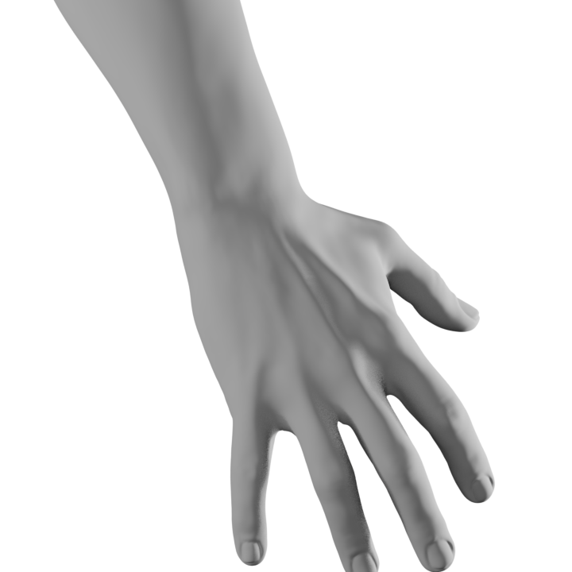

Chaque geste va du repos à la pose en 25
images, à la fraction exacte que verifier-rig.py mesure. Cette
build de Blender est compilée sans FFmpeg et la machine n'a pas de binaire
ffmpeg : la sortie est donc une séquence d'images, animée ici sans
aucun codec.
